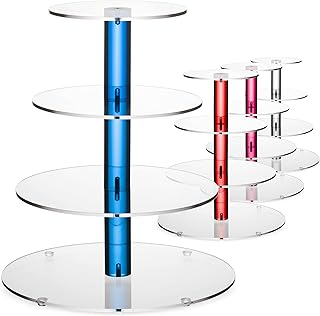

The Aetheria Tiered Ritual Stand immediately captures attention with its distinct dark academia aesthetic, a style enjoying a well-deserved renaissance for its emphasis on scholarly elegance and arcane allure. Crafted with an eye for intricate detail, the stand's dark finish provides a sophisticated backdrop that allows the celestial engravings to truly come to life. These subtle yet impactful motifs, reminiscent of ancient star charts or alchemical symbols, are etched with precision, lending an air of authenticity and mystique without feeling ostentatious. The tiered design itself is not just practical; it creates a visual hierarchy, inviting the eye to explore each level, much like an unfolding narrative. It’s a piece that doesn't just sit on a surface; it commands presence, becoming a focal point that stimulates contemplation and enhances the intellectual gravitas of any room.
Beyond its considerable aesthetic merits, the Aetheria stand distinguishes itself through its thoughtful utility and evident quality. The multi-tier construction offers intuitive organization for an array of small, precious items, from cherished crystals and found curios to delicate tools for intention-setting or creative work. Each tier is adequately spaced, preventing overcrowding and ensuring individual pieces can be admired without obstruction. The materials, while not explicitly detailed, convey a sense of robust durability and refined craftsmanship; the weight feels substantial, suggesting a quality resin or a dense, treated wood, finished to resist minor wear. This isn't a flimsy decorative item; it's a functional display piece engineered to hold and highlight your treasures securely, maintaining its integrity and contributing to an environment of ordered beauty for years to come. Its design speaks to a commitment to both form and lasting function.
This multi-tier stand offers an exquisite platform for organizing and showcasing crystals, curios, and small tools. Its sophisticated design, featuring a dark academia aesthetic and celestial engravings, transforms any space into a realm of organized beauty and quiet contemplation.
View Current Price| Material | Premium Treated Resin |
| Key Feature | Multi-tiered display for curated collections |
| Aesthetic Style | Dark Academia, Celestial Mystique |